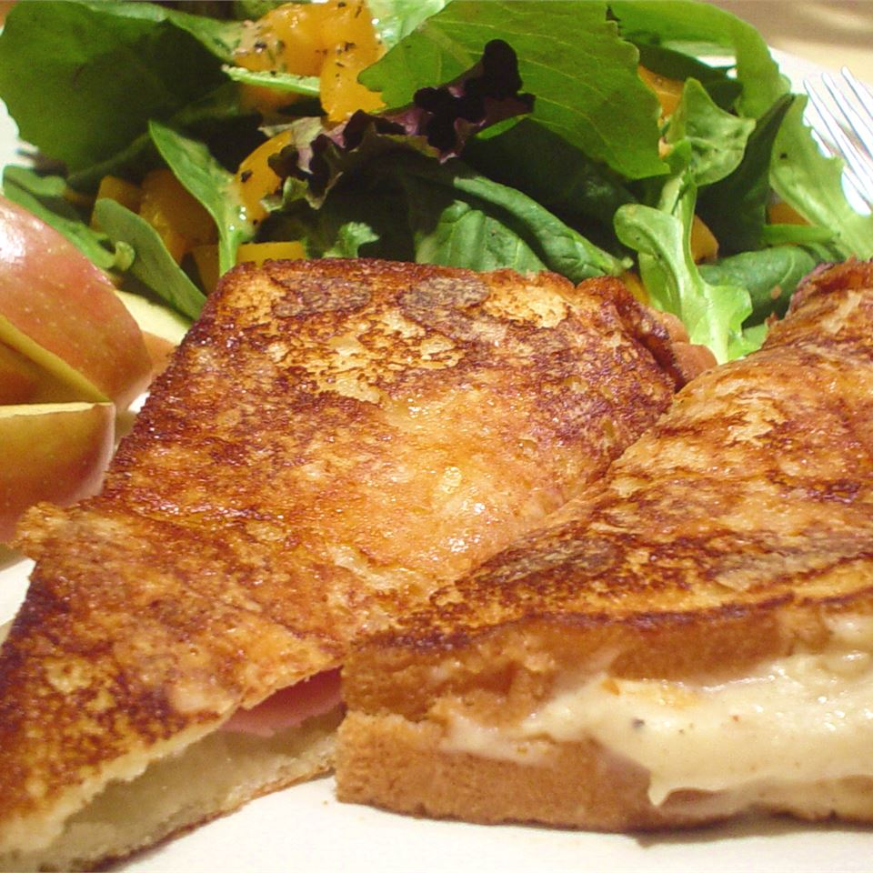

Croque-Monsieur Sandwich

Description
Easily adaptable into a Monte Cristo by just adding chicken, this wonderful battered then fried sandwich makes a great lunch with a tossed salad.
Ingredients
- 1 tablespoon Dijon mustard
- 2 tablespoons mayonnaise
- 4 tablespoons butter or margarine, softened
- 6 slices white bread
- 6 slices Swiss cheese
- 12 slices thinly sliced deli ham
- 4 tablespoons all-purpose flour
- ½ teaspoon baking powder
- ¼ teaspoon salt
- 2 eggs
- ¼ cup water
- 1 tablespoon vegetable oil
Steps
- Use 2 tablespoons of the butter to spread over one side of each slice of bread. On three of the slices, spread a layer of Dijon mustard over the butter, and top each with 4 slices of ham. On the other three, spread mayonnaise, and top each one with 2 slices of Swiss cheese. Press ham and cheese sides of sandwiches together.
- In a flat bottomed dish, whisk together the flour, baking powder, salt, eggs, and water until blended. Set aside.
- Heat remaining butter and vegetable oil in a large skillet over medium heat. Dip both sides of each sandwich in the egg mixture, and fry in the oil and butter until browned, flipping to brown on each side.
Return to main page